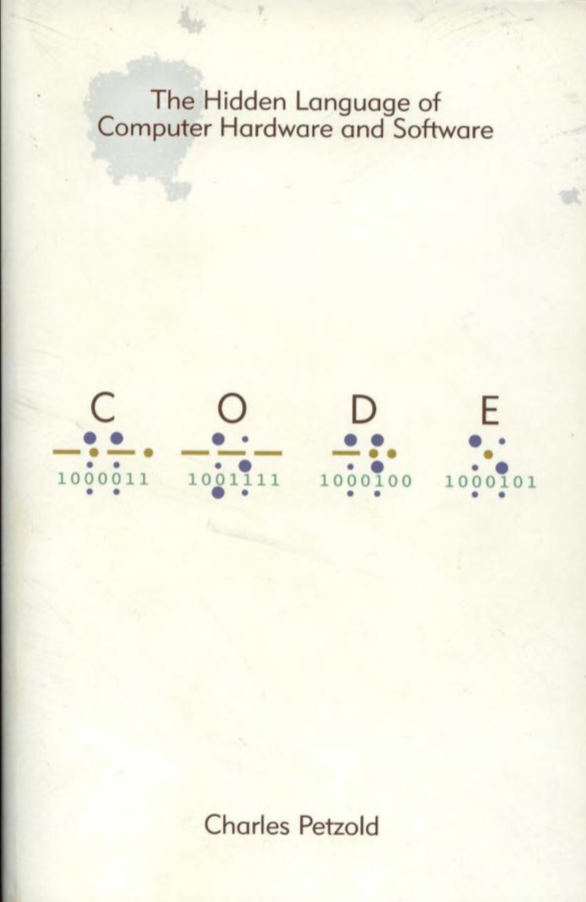
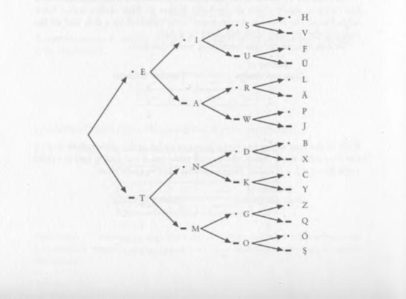

CODE
The Hidden Language of
Computer Hardware and Software
Charles Petzold
Presented by
Gokula Kumaran S
ABOUT THE AUTHOR
Charles Petzold

Programmer & Technical Author
Charles Petzold is an American programmer and technical author best known for explaining computer technology from its fundamental ideas.
Known for
- Code — explaining how computers work from the ground up
- Programming Windows — a classic guide to Windows programming
- Making complex technical ideas easier to understand
WHERE THE BOOK STARTS
Before Computers,
There Was Communication.
Petzold does not begin with processors, programming languages, or binary numbers. He begins with a much simpler question:
How can one person send information to another?
Communication
We need a way to represent information.
Signals
Information can be carried by a signal.
Code
A system gives meaning to those signals.
This is where the journey begins. From communication → to code → to computers.
THE FIRST CODE
Morse Code
Turning letters into simple signals
Instead of sending a complete letter, Morse code represents each letter using only two simple signals:
FOR EXAMPLE
The important idea: information can be represented using a small number of simple states.

Each step takes us through a simple sequence of dots and dashes.
FROM COMMUNICATION TO ELECTRICITY
How Does a
Simple Circuit Work?
Petzold explains that before we can build anything complex, we need to understand the simplest electrical circuit: a battery, two wires, and a bulb.
-
01
A battery creates a voltage — a difference in electric potential between its two terminals.
-
02
Copper wire is a good conductor because it has mobile conduction electrons that respond readily to an electric field.
-
03
When the circuit is closed, electrons flow through the wire and transfer energy to the bulb's filament, producing light and heat.
TRY IT YOURSELF
Close the Circuit
Press ON to close the switch and watch the electrons flow.
THE NEXT STEP
How Does a
Relay Work?
Petzold shows that a relay lets one circuit control another — using an electromagnetic field. This was the key building block of early telegraph repeaters and, later, the first computers.
- 🔋 Battery powers the coil
- ↓
- âš¡ Current flows through coil
- ↓
- 🧲 Electromagnetic field forms
- ↓
- âš™ï¸ Flexible arm is pulled down
- ↓
- 🔌 Contact closes
- ↓
- 💡 Second circuit → Bulb ON
WATCH THE RELAY
Step-by-Step Animation
Press "Activate Relay" to see the physical sequence.
CHAPTER 11 — GATES (NOT BILL)
From Relays to
Logic Gates
Petzold shows that "the input of a relay need not be a switch, and the output of a relay need not be a lightbulb." By connecting relays in different configurations, we can build the fundamental building blocks of all computers: logic gates.
-
⚡
OR Gate — Two relays with contacts in parallel. Either one can light the bulb.
-
🔗
AND Gate — Two relays with contacts in series. Both must be on to light the bulb.
-
🔄
NOT Gate — A relay wired in reverse. The bulb is on when the switch is off, and off when the switch is on.
OR GATE
Either Switch Lights the Bulb
Two relays with contacts wired in parallel — either one closing completes the circuit.
TRUTH TABLE
| A | B | Output |
|---|---|---|
| 0 | 0 | 0 |
| 0 | 1 | 1 |
| 1 | 0 | 1 |
| 1 | 1 | 1 |
How it works
Two relay contacts are wired in parallel. If either relay is triggered, current can flow through that contact to the bulb. The bulb only stays off when both switches are off.
AND GATE
Both Switches Must Be ON
Two relays with contacts wired in series — both must close for current to reach the bulb.
TRUTH TABLE
| A | B | Output |
|---|---|---|
| 0 | 0 | 0 |
| 0 | 1 | 0 |
| 1 | 0 | 0 |
| 1 | 1 | 1 |
How it works
Two relay contacts are wired in series. Current must pass through both contacts to reach the bulb. Only when both switches are on will the bulb light up.
NOT GATE (INVERTER)
The Output is the Opposite
A "double-throw" relay — the arm rests on one contact when off, switches to the other when on.
TRUTH TABLE
| A | Output |
|---|---|
| 0 | 1 |
| 1 | 0 |
How it works
This is a "double-throw" relay. The arm has two contact positions. At rest, the arm touches the upper (NC) contact, completing the bulb circuit. When the coil is energized, the arm is pulled away to the lower contact, breaking the bulb circuit.
The output is always the opposite of the input — this is inversion, the basis of the NOT gate.